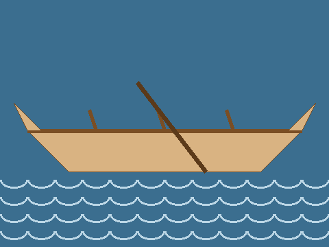
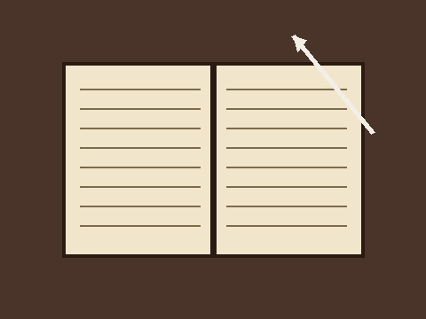

The Voyageur Compass
A brass compass carried by a fur-trade voyageur in the 1790s. Currently missing.
Archive photo, before the theft
On the night of 14 October, the museum’s most treasured object vanished from Display Case 7. The museum is open again, and the investigation continues.
Open the case fileA brass compass carried by a fur-trade voyageur in the 1790s. Currently missing.
Archive photo, before the theft

A scale model showing how voyageurs moved furs along northern rivers.
Archive photo
A lamp used underground in the early days of Sudbury’s nickel mines.
Archive photo

A merchant’s account book, listing furs traded for tools and cloth.
Archive photo